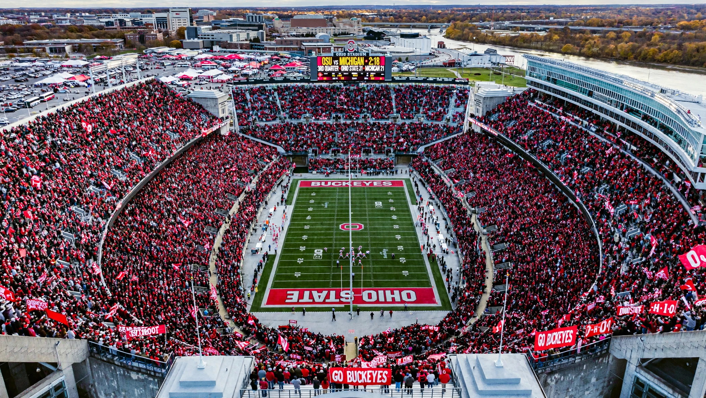

| Ohio State Buckeyes | |
|---|---|
| University | Ohio State University |
| Conference | Big Ten Conference |
| NCAA | Division I (FBS for football) |
| Location | Columbus, Ohio |
| Nickname | Buckeyes |
| Colors | Scarlet and gray |
| Mascot | Brutus Buckeye |
The Ohio State Buckeyes are the intercollegiate athletic teams representing Ohio State University in Columbus, Ohio. The Buckeyes compete in NCAA Division I as members of the Big Ten Conference, sponsoring 36 varsity sports — among the largest athletic programs in the United States. The nickname comes from the buckeye, the state tree of Ohio.
The football team, which began play in 1890, is one of the most successful in college football history, claiming nine national championships, most recently winning the first 12-team College Football Playoff for the 2024 season in January 2025. The Buckeyes play at Ohio Stadium, known as "the Horseshoe," with a capacity of over 100,000. Fierce rivalries include the annual game against the Michigan Wolverines, widely considered one of the greatest rivalries in American sport. Ohio State is the only school to produce a two-time Heisman Trophy winner, Archie Griffin (1974 and 1975).
Buckeye teams have won national titles in men's basketball (1960), wrestling, volleyball, swimming, synchronized swimming, fencing, pistol, and rowing. The university has produced numerous Olympians, including Jesse Owens, who won four gold medals at the 1936 Berlin Olympics while an Ohio State student.
See also: Ohio State Buckeyes football, Ohio Stadium, Michigan–Ohio State rivalry, Brutus Buckeye.